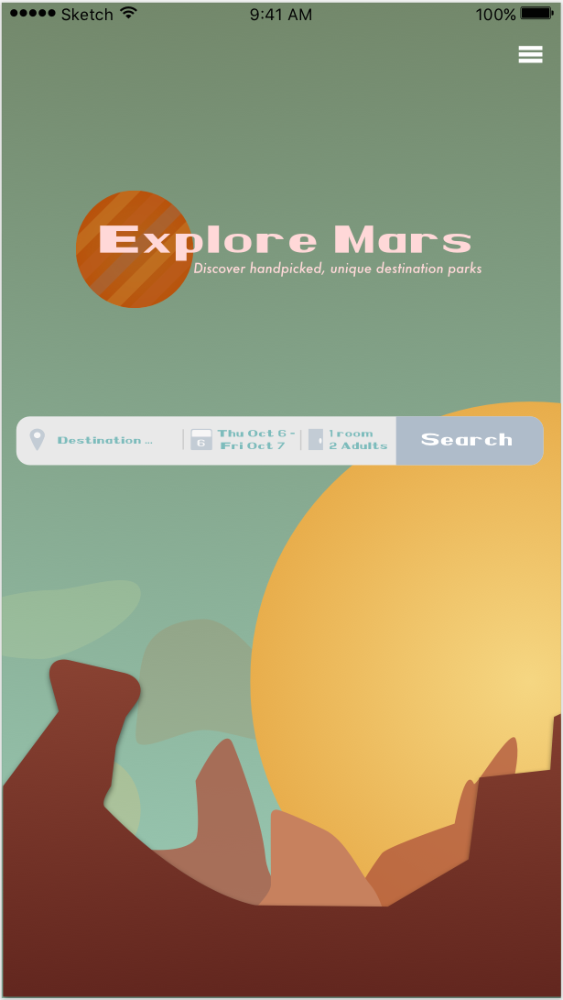

Overview
Explore Mars is an interactive travel website that explores Nasa's historic missions to Mars. Here are some of the key features:
- Nasa's Mars Missions - All of our travel locations are past missions Nasa has held, including Curiosity, Spirit, and Opportunity rover locations.
- Tesla Powered and Five Star Safety - Our travel planes are equipped with Tesla powered equipment including a 5-Star Safety rating.
- Prototype Approach - We implement a prototype process, switching between subjective and objective perspectives to successfully make sure the experience feels alive.
Context and Challenge
- Project background - Our project background consisted of creatively thinking of an application that allowed users to choose Mars mission landmarks to visit.
- The challenge - The challenge was to think of a travel application that distinguised from our competitors, as most of the travel applications consisted of traveling to other colonies.
- Project goals - Our vision is to create an application that's functionally pleasing yet also engaging visually.
Process and Insight
- Functional approach - We began the process by analyzing the functionality of the application, exploring low fidelity wireframes, noticing different generation groups, and analyzing our travel competitors.
- Design approach - We researched vintage Mars posters to obtain our color palette, making sure the feel of the application merges with the inspiration and exploration of the Mars missions.
- Prototyping - Prototyping is utilzed to portray high fidelity compositions, regularly checking that our functional and design approach are linked a union.